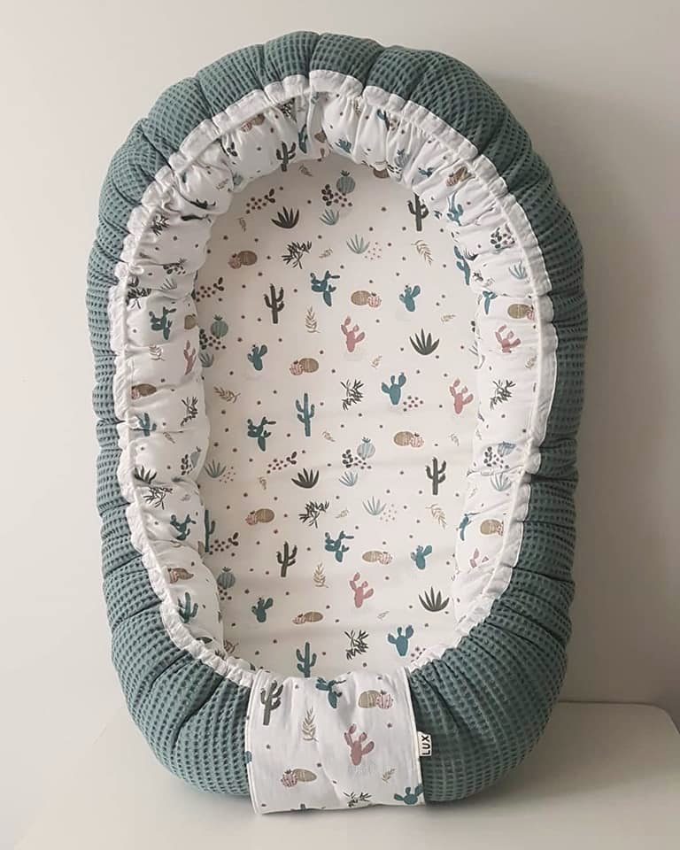

Samen
ontworpen,
met de hand
gemaakt
Carien Geurts
Atelier Ospel
“Hoe bijzonder is het om één van de eerste pakjes voor iemand te mogen maken.”
Over Carien001 — Producten

01
Kraamcadeauboxen
Handgemaakte babyproducten in één thema, met naam en geboortedatum. Vanaf € 35.
Bekijk de kraamcadeauboxen
02
Prematuurkleding
Maatwerk in (prematuur)babykleding. Ook prematuurmaten.
Bekijk prematuurkleding


003 — Inspiratie
Ieder nieuw leven is bijzonder
004 — Instagram